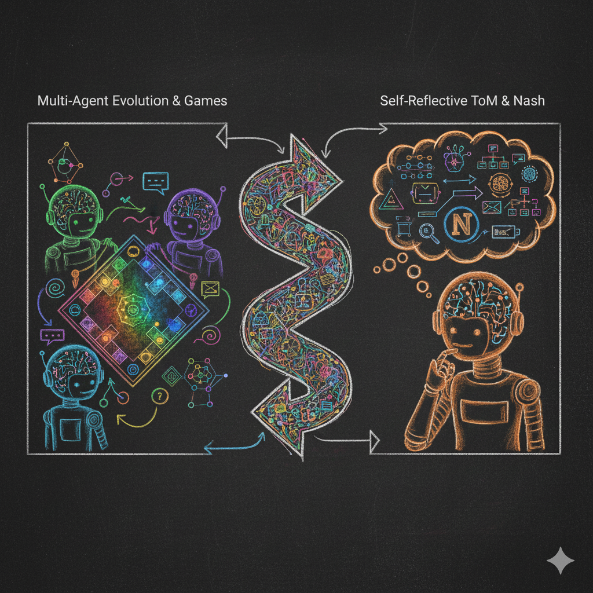
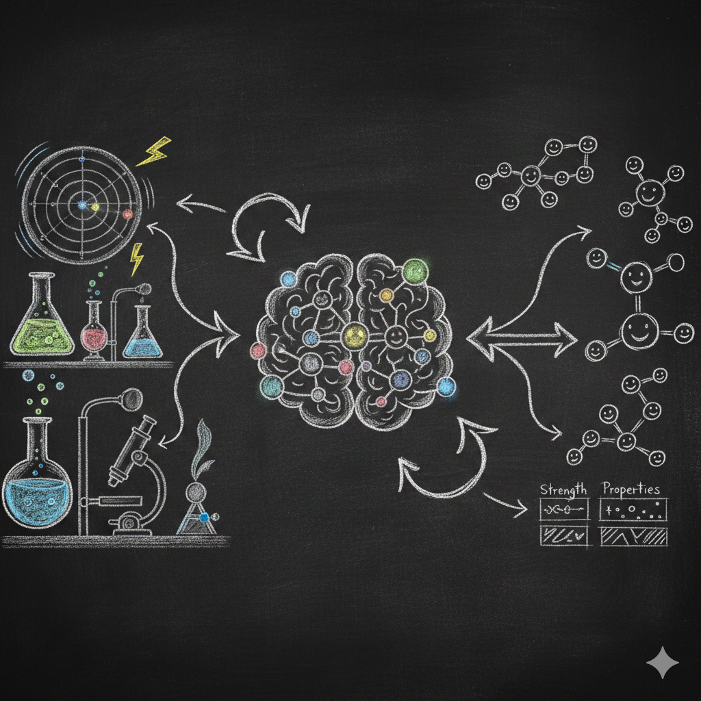
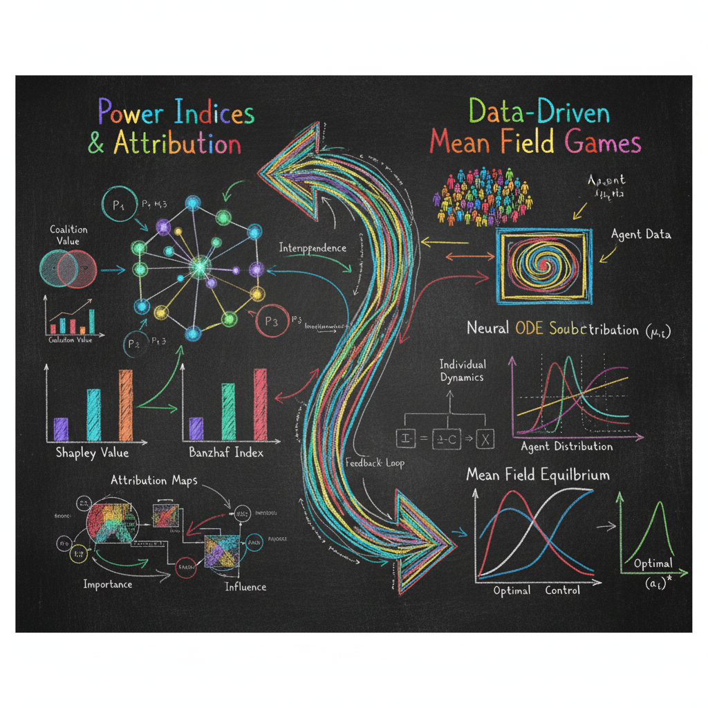

Research
Our research spans the intersection of artificial intelligence, complex systems, and computational methods. We develop novel approaches to understanding and engineering intelligent multi-agent systems.
LLM Strategizing and Theory of Mind

how do LLMs think, strategize & plan? How do their interactions differ when they interact with humans vs with one another?"
Large language models demonstrate impressive zero-shot reasoning abilities, but struggle significantly with long-term strategic reasoning in single or multiagent settings. Recent work shows that when placed in competitive, cooperative, or mixed-motive environments, LLMs exhibit nontrivial emergent strategic behavior.
In today's world, so dominated by either human LLM engagement or multi-LLM interaction, understanding and making such long-term reasoning robust is key to society. We combine tools from computational Game Theory, Large Language Models, finetuning, and training with concepts from cognitive social science to develop in depth understanding of such systems such things
Selected Publications & Challenges:
- Game of
Thoughts: Iterative Reasoning in Game-Theoretic Domains with Large Language
Models
B Kempinski, I Gemp, K Larson, M Lanctot, Y Bachrach, T Kachman
AAMAS 2025, 1088-1097 - Theory-of-Mind Challenges for LLM Agents
Push the boundaries of AI social intelligence through persuasion, trust, and strategic cooperation across four mind-bending challenges.
Chemical Artificial Intelligence

How can AI systems advance our understanding of the natural sciences, and how can we learn from automation to autonomisation? Advancing how we conduct scientific discovery, both theoretically and experimentally, can have a profound impact on our society.
Within the Big Chemistry consortium, we tackle groundbreaking scientific problems by utilizing a combination of Deep Learning methods, Foundation models, molecular and dynamical simulations, with high-throughput experimental data
Selected Publications:
- Modeling
Chemical Reaction Networks Using Neural Ordinary Differential Equations
A C M Thöni, W E Robinson, Y Bachrach, W T S Huck, T Kachman
Journal of Chemical Information and Modeling 65 (9), 4346-4352 - What Can Attribution Methods Show Us about Chemical Language
Models?
S Hödl, T Kachman, Y Bachrach, WTS Huck, WE Robinson
Digital Discovery 3 (9), 1738-1748 - Self-Organized Resonance during Search of a Diverse Chemical
Space
T Kachman, JA Owen, JL England
Physical Review Letters 119 (3), 038001
Game Theory & Deep Learning

How can Deep learning help us understand game-theoretical scenarios for unseen and generalized games?
Understanding players' value attribution, such as Shapley value or bandit indexes, in games is fundamental; it can help us shape coalitions, influence decision-making, and plan our strategy effectively. However, calculating such indexes is computationally intensive to the point of being intractable. Understanding game-theoretical scenarios using tools from AI is a key theme of our group.
Selected Publications:
- Neural Mean-Field Games:
Extending Mean-Field Game Theory with Neural Stochastic Differential Equations
A C M Thöni, Y Bachrach, T Kachman
arXiv preprint arXiv:2504.13228 - InfluenceNet: AI Models for Banzhaf and Shapley Value
Prediction
B Kempinski, T Kachman
Intelligent Systems and Applications, 1-23 - Neural Payoff Machines: Predicting Fair and Stable Payoff
Allocations among Team Members
D Cornelisse, T Rood, M Malinowski, Y Bachrach, T Kachman
Advances in Neural Information Processing Systems 35, 25491-25503
Dynamical Aspects of Learning in Neural Networks
What can the underlying dynamical process of training neural networks teach us about the final state of it and its learning capacity?
Understanding how neural networks learn from data and what the underlying dynamical processes is is key to fundamental aspects of our theoretical understanding of artificial neural networks. Using deep mathematical tooling from dynamical systems, combinatorial optimization, and at-scale deep learning systems, this insight is key to our group's research.
Selected Publications:
- Gradients Are Not All You
Need
L Metz, C D Freeman, S S Schoenholz, T Kachman
arXiv preprint arXiv:2111.05803, 2022 - Lyapunov
Exponents for Diversity in Differentiable Games
J Lorraine, P Vicol, J Parker-Holder, T Kachman, L Metz, J Foerster
AAMAS 2022, 842-852 - Using Bifurcations for Diversity in Differentiable Games
Jonathan Lorraine, Jack Parker-Holder, Paul Vicol, Aldo Pacchiano, Luke Metz, Tal Kachman, Jakob Foerster
ICML 2021 Beyond First Order Methods Workshop